(Dis)similarity metrics¶
Introduction¶
Lacking response and class information, most unsupervised algorithms search for patterns based on how alike or different are observations with respect to each other. One consequence of this is that the outcome of these algorithms will depend on what we mean by two observations being alike or similar. In this lesson, we’ll review several measures of proximity, quantifying either similarity or dissimilarity between pair of observations, or sets of observations. Most of the present material was adapted from references [1,2].
What is a proximity measure?¶
There are actually very few requirements for a valid proximity measure. The most important property is that the magnitude of the measure must reflect in some sense whether two observations are close or far apart. When quantifying similarity, the measure must be larger the more each pair of observations resemble each other, while when quantifying dissimilarity, the inverse would be true. A dissimilarity measure thus acts much as a distance between observations (though in strict a distance must satisfy additional constraints, such as the triangle inequality).
Dissimilarity measures¶
Let \(d(\vec{x},\vec{y})\) be the dissimilarity between two observations \(\vec{x}\) and \(\vec{y}\). Then, for \(d(\vec{x},\vec{y})\) to be a valid dissimilarity measure the following properties must hold:
\(d(\vec{x},\vec{y})\) is a function \(d:X\times X \rightarrow \mathbb{R}\) such that \(-\infty < d_0 \leq d(\vec{x},\vec{y}) < \infty\), where \(d_0\) is the minimum possible value for \(d(\vec{x},\vec{y})\).
\(d(\vec{x},\vec{x}) = d_0\)
It is a symmetric function, \(d(\vec{x},\vec{y}) = d(\vec{y},\vec{x})\). Actually, this last property does not hold for some functions used in practice, with some consequences, the most obvious being that the dissimilarity matrix is not symmetric.
The measure \(d(\vec{x},\vec{y})\) is also a metric is the following properties also hold:
\(d(\vec{x},\vec{y}) = d_0\) if and only if \(\vec{x} = \vec{y}\)
The triangle inequality: \(d(\vec{x},\vec{z}) \leq d(\vec{x},\vec{y}) + d(\vec{y},\vec{z})\). The most famous metric is the euclidean distance, or \(L_2\)-norm.
Similarity measures¶
Let \(s(\vec{x},\vec{y})\) be the dissimilarity between two observations \(\vec{x}\) and \(\vec{y}\). Then, for \(s(\vec{x},\vec{y})\) to be a valid dissimilarity measure the following properties must hold:
\(s(\vec{x},\vec{y})\) is a function \(s:X\times X \rightarrow \mathbb{R}\) such that \(-\infty < s(\vec{x},\vec{y}) \leq s_0 < \infty\), where \(s_0\) is the maximum possible value for \(s(\vec{x},\vec{y})\).
\(s(\vec{x},\vec{x}) = s_0\)
It is a symmetric function, \(s(\vec{x},\vec{y}) = s(\vec{y},\vec{x})\).
The measure \(s(\vec{x},\vec{y})\) is also a metric is the following properties also hold:
\(s(\vec{x},\vec{y}) = s_0\) if and only if \(\vec{x} = \vec{y}\)
\(s(\vec{x},\vec{y})s(\vec{y},\vec{z}) \leq \left [ s(\vec{x},\vec{y}) + s(\vec{y},\vec{z}) \right ]s(\vec{x},\vec{z})\).
Transforming between similarity and dissimilarity¶
It is relatively simple to transform from a similarity metric to a dissimilarity one, and vice-versa, or to build new metrics by transformation. It can be shown that the following transformations result in a valid metric:
\(s = \frac{a}{d}\), with \(a>0\).
\(s = d_{max} - d\)
\(d' = -\ln(d_{max} + k - d)\) for \(d(\vec{x},\vec{y})>0\) and \(k>0\).
\(d' = \frac{kd}{1+d}\) for \(d(\vec{x},\vec{y})>0\) and \(k>0\).
\(s' = \frac{1}{1-s}\) for \(s < 1\).
\(s = \frac{1}{1+d}\) is a common transformation
The dissimilarity (similarity) matrix¶
We have previously defined the data matrix \(X\) as an \(N\times D\) matrix, where \(N\) is the number of observations and \(D\) is the number of features or dimensions. The (dis)similarity matrix (or distance matrix) (\(D\)) \(S\) is a \(N\times N\) matrix where each entry (\(D_{ij}\)) \(S_{ij}\) is the (dis)similarity between observations \(\vec{x}_i\) and \(vec{x}_j\), (\(d(\vec{x}_i,\vec{x}_j)\)) \(s(\vec{x}_i,\vec{x}_j)\).
We can define a general purpose function that accepts a proximity measure, and returns a (dis)similarity matrix:
import numpy as np
from itertools import product
def proximity_matrix(X, measure='euclidian', **kwargs):
if measure == 'euclidian':
" This is fast for euclidian distance."
D = np.sqrt(np.sum(
(X[:, np.newaxis, :] - X[np.newaxis, :, :]) ** 2,
axis = -1))
else:
" Revert to slower loop for unknown function."
N = len(X)
D = np.zeros((N,N))
for i, j in product(range(N), repeat=2):
D[i,j] = measure(X[i], X[j], **kwargs)
return D
We can test our function with some sample numerical data, let’s use the Iris data set again. Remember, the data set consists of 150 observations with 4 features.
import matplotlib.pyplot as plt
from sklearn.datasets import load_iris
import numpy as np
dataset = load_iris()
X = dataset['data']
y = dataset['target']
fig, ax = plt.subplots(1, 2, figsize=(12,6))
ax[0].scatter(X[:,0], X[:,1], c=y)
ax[0].set_ylabel('Sepal width (cm)')
ax[0].set_xlabel('Sepal length (cm)')
ax[1].scatter(X[:,2], X[:,3], c=y)
ax[1].set_ylabel('Petal width (cm)')
ax[1].set_xlabel('Petal length (cm)');
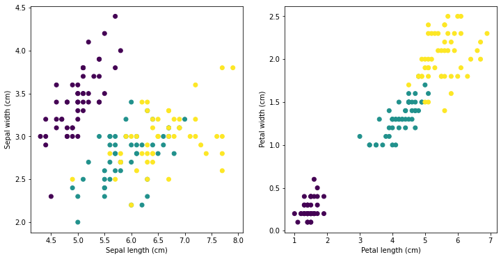
And find the distance matrix, to avoid printing the whole matrix, let’s visualize the distance matrix using a heat map while defining a helper function for future use. To further explore the effect of each measure, we also project the distance matrix into a the “best” 2D representation using a technique called multidimensional scaling (MDS). MDS searches the best projection that preserves the original distances. We will study MDS in detail further into the course.
from sklearn.manifold import MDS
D = proximity_matrix(X)
def plot_prox(D, mds=True, labels=y):
if mds:
fig, (ax1, ax2, ax3) = plt.subplots(figsize=(24, 8), ncols=3)
# MDS projection
mds = MDS(n_components=2, dissimilarity='precomputed', random_state=0)
fdata = mds.fit_transform(D)
ax3.scatter(fdata[:, 0], fdata[:, 1], c=labels, s=100)
else:
fig, (ax1, ax2) = plt.subplots(figsize=(16, 8), ncols=2)
# Heat map
pos = ax1.imshow(D)
fig.colorbar(pos, ax=ax1)
# Hitogram
ax2.hist(np.ravel(D), bins=15)
plot_prox(D, mds=True)
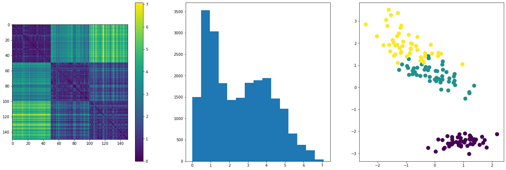
TODO: Make visualization interactive, such that selecting a pair in the heatmap, it colors such pair in the scatterplot, and displays the metric. Alternatively, select a pair of points in the scatter and display the metric.
Dissimilarity measures for numerical data¶
Weighted \(l_{p}\)-norm, Minkowski Distance¶
The weighted \(l_p\)-norm is the most common dissimilarity measure. It is defines as
where \(x_i\) and \(y_i\) are the ith feature of observation \(\vec{x}\) and \(\vec{y}\), and \(w_i>0\) is the weight coefficient. For \(w_i = 1\) we get the unweighted \(l_p\)-norm. The value of \(p\) controls the relative importance of large to small absolute differences \(\left | x_i - y_i \right|\). The relative importance of large differences grows with the value of \(p\).
The Mikowski distance is not scale invariant, so its usual to standardize the data before using this metric. It satisfies the triangle inequality, so it is a metric.
The most common \(p\) values are \(p=1, 2, \infty\), discussed below. The \(l_1\) and \(l_\infty\) norms may be viewed as overestimation and underestimation of the \(l_2\) norm, since \(d_{\infty}\leq d_2 \leq d_1\).
We now implement the general Minkowski distance within our original function. A similar implementation to that of the Euclidean distance would still be possible, but adjusting for an arbitrary exponent \(p\). Here we instead define the distance function to further explore its properties.
def minkowski_d(x, y, **kwargs):
#x = np.asarray(x)
#y = np.asarray(y)
if 'p' not in kwargs:
print("Missing required parameter p")
p = kwargs['p']
return np.sum(np.abs(x - y)**p)**(1/p)
It is interesting to study how the distance changes with \(p\). Next, we consider 10 different distance from vectors of dimension 5 sampled from the \(U(0,1)\) distribution, an plot the Minkowsky distance vs \(p\)
p_list = [1/4, 1/2, 3/4, 1, 1.5, 2, 3, 4, 5, 6, 7, 8, 9, 10, 100]
for i in range(10):
x1 = np.random.rand(5)
y1 = np.random.rand(5)
d_list = [minkowski_d(x1, y1, p=p) for p in p_list]
plt.loglog(p_list, d_list, 'o--')
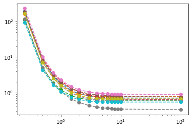
In general the distance decreases with \(p\) as we now show. We need to prove that \(|\vec{x}|_{p} \geq |\vec{x}|_{p+1}\). For \(\vec{x} = 0\) the equality holds. For \(\vec{x} \neq 0\), let \(y_i = |x_i|/|\vec{x}|_{p+1}\leq 1\). Then,
From the last inequality
thus, proving the asseveration.
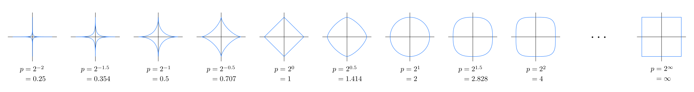
\(l_1\), Manhattan distance¶
The \(l_1\) normal, also called the Manhattan distance, or the city-block distance, is defined as
It’s called the city block distance, since it sums the absolute difference of each component, akin to summing the orthogonal distances transversed when moving on a squared road network. It is preferred over the \(l_2\) norm when outliers are present. A good standardization for the Manhattan distance is to divide each its feature by its range.

D = proximity_matrix(X, measure=minkowski_d, p=1)
plot_prox(D, mds=True)
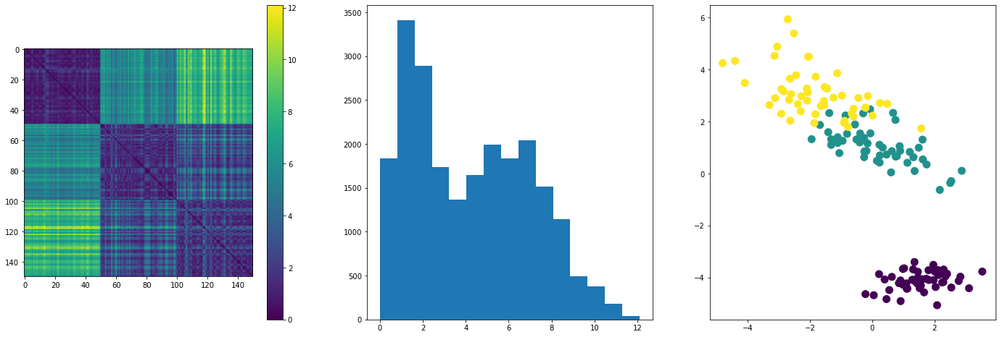
One possible weighted transformation for the Manhattan distance, which greatly exaggerates large distances, is
where \(b_i\) and \(a_i\) are the maximum and minimum values among the ith features of N vectors of X, respectively.
Since \(d_G\) depends on the whole set X, through \(a\) and \(b\), we need to pass those vectors explicitly.
def d_g(x, y, **kwargs):
a = kwargs['a']
b = kwargs['b']
return -np.log10(1 - np.sum(np.abs(x - y)/(b - a))/len(x))
a = np.min(X, axis=0)
b = np.max(X, axis=0)
D = proximity_matrix(X, d_g, a=a, b=b)
plot_prox(D, mds=True)
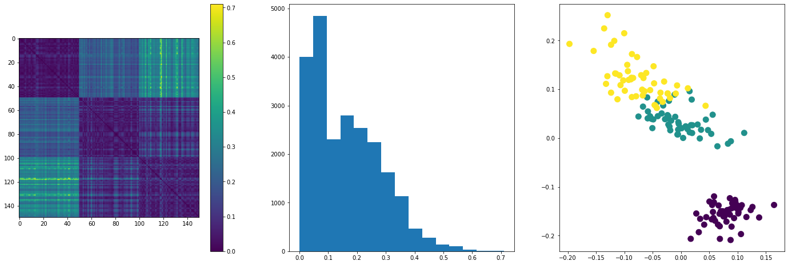
\(l_2\), Euclidean distance¶
We have already implemented the \(l_2\) norm as the euclidean distance before. We can verify the output of the Minkowsky distance with \(p=2\) is the same.
This is probably the most common distance metric, and many learning algorithms are design to work with Euclidean distance, such a KNN and K-means.
D = proximity_matrix(X, measure=minkowski_d, p=2)
plot_prox(D, mds=True)
\(l_\infty\), Chebyshev distance¶
In the limit \(p \rightarrow \infty\) the Minkowski distance becomes the Chebyshev distance, i.e., the maximum difference, component-wise.
Fig. 8 The Chebyshev distance between two spaces on a chess board gives the minimum number of moves a king requires to move between them. This is because a king can move diagonally, so that the jumps to cover the smaller distance parallel to a rank or column is effectively absorbed into the jumps covering the larger. Above are the Chebyshev distances of each square from the square f6. Source: https://en.wikipedia.org/wiki/Chebyshev_distance¶
def chebyshev_d(x, y):
return np.max(np.abs(x - y))
D = proximity_matrix(X, measure=chebyshev_d)
plot_prox(D, mds=True)
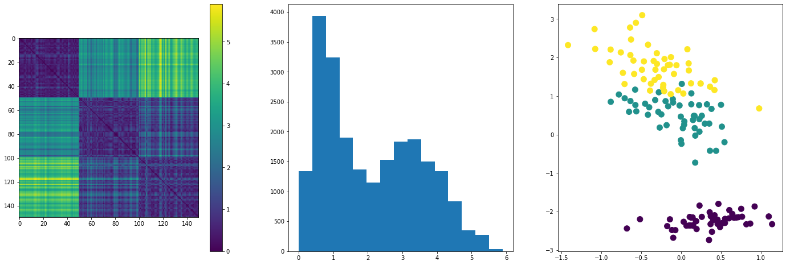
Canberra distance¶
Text from [3].
The Canberra distance is a metric function often used for data scattered around an origin. It was introduced in 1966 (Lance & Williams 1966) and is today mainly used in the form of 1967 (Lance & Williams 1967).
The Canberra metric is similar to the Manhattan distance (which itself is a special form of the Minkowski distance). The distinction is that the absolute difference between the variables of the two objects is divided by the sum of the absolute variable values prior to summing. The generalised equation is given in the form:
This metric has the property that the result becomes unity when the variables are of opposite sign. It is useful in the special case where signs represent differences in kind rather than in degree. Anyhow, it is mainly used for values > 0. This metric is easily biased for measures around the origin and very sensitive for values close to 0, where it is more sensitive to proportional than to absolute differences. This feature becomes more apparent in higher dimensional space, respectively an increasing number of variables. It is in turn less influenced than the Manhattan distance by variables with high values. As a very sensitive measurement it is applicable to identify deviations from normal readings.
def canberra_d(x, y):
return np.sum(np.abs(x - y)/(np.abs(x) + np.abs(y)))
D = proximity_matrix(X, measure=canberra_d)
plot_prox(D, mds=True)
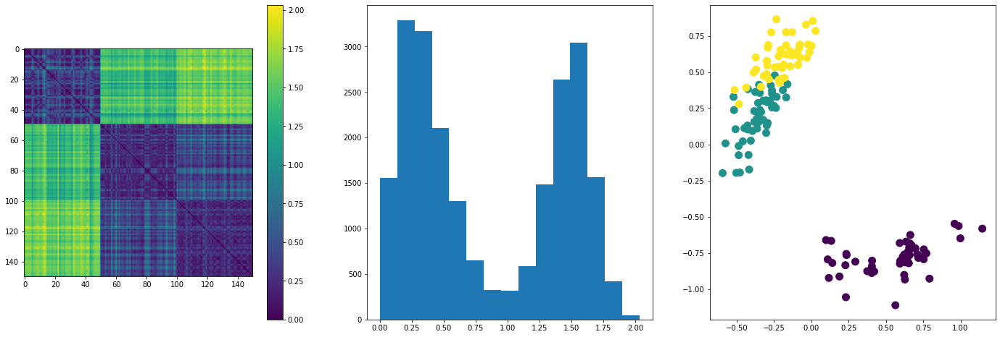
A metric that shares some properties wit the Canberra distance is
def d_q(x, y):
return np.sqrt(np.sum(((x - y)/(x + y))**2)/len(X))
D = proximity_matrix(X, measure=d_q)
plot_prox(D, mds=True)
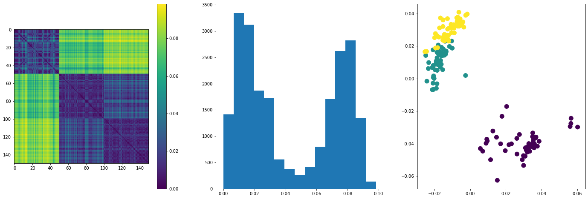
Yet, another similar metric is the Bray-Curtis distance. The Bray-Curtis distance is in the range [0, 1] if all coordinates are positive, and is undefined if the inputs are of length zero.
def bc_d(x, y):
return np.sum(np.abs(x - y))/np.sum(np.abs(x + y))
D = proximity_matrix(X, measure=bc_d)
plot_prox(D, mds=True)
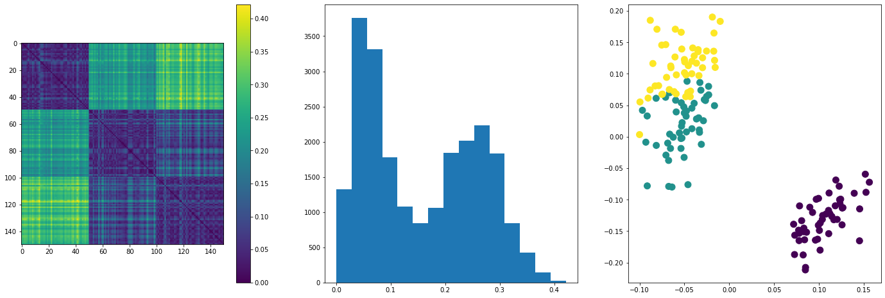
Mahalanobis distance¶
A generalization of the \(l_2\) norm is
where \(B\) is a symmetric, positive definite matrix.
For the special case where \(B\) is the inverse of the covariance matrix, we obtain the Mahalanobis distance
The Mahalanobis distance projects the standard euclidean distance onto the principal axes, then scales each component by the variance along those axes. Think of it as a generalization of the uni-variate standardization \((x - y)\sigma\).
Consider the diagonalization of the \(D\times D\) covariance matrix \(\Sigma = (X-\mu)^T (X-\mu)/(N-1)\), \(\Sigma = U \Lambda U^T\). Here \(U\) is the matrix of column eigenvector, where each column a eigenvector pointing in the directions of the principal components, and \(\Lambda\) is a diagonal matrix with the variances along the principal axes in the diagonal.
A single centered observation is rotated by \(\vec{x}' = U^T \vec{x}\). So to project the difference vector \(\vec{\delta}\) onto the principal components we do \(\vec{\delta}' = U^T (\vec{x} - \vec{y})\).
Now, in the new space, features are uncorrelated, so we can standardize each component dividing by the standard deviation along each axis, \(\delta'_i/s_i\). Calculating the squared euclidean distance with the scaled components is equivalent to the following matrix operation
With the rotations made explicit
which makes the equivalence explicit.
You will implement the Mahalanobis distance in the assignment, as a function called mahalanobis_d.
def mahalanobis_d(x, y, **kwargs):
" A required argument is the covariance matrix S. "
S = kwargs['S']
d = x - y
d = d[:, np.newaxis]
return np.sqrt(d.T @ np.linalg.pinv(S) @ d)
S = np.cov(X.T)
D = proximity_matrix(X, measure=mahalanobis_d, S=S)
plot_prox(D, mds=True)
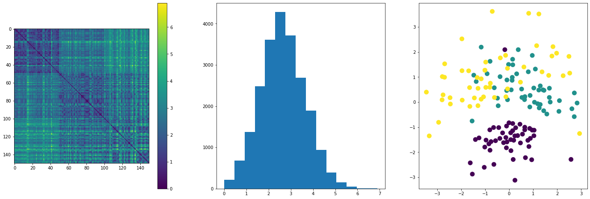
Similarity measures for numerical data¶
Cosine similarity¶
Some text from [4].
Cosine similarity is a similarity metric based on the inner product of two vectors. It takes its name from the geometrical interpretation of the inner product, which gives the cosine of the angle between two vectors as
It is useful when the relative proportions among coordinates is important, while ignoring their absolute magnitude. This measure is invariant under rotations, but not to linear transformations, since general transformations do not preserve angles. It is also the same as the inner product of the same vectors normalized to both have length 1.
The cosine similarity is particularly used in positive space, where the outcome is neatly bounded in [0,1], and it’s most commonly used in high-dimensional positive spaces.
For example, in information retrieval and text mining, each term is notionally assigned a different dimension and a document is characterised by a vector where the value in each dimension corresponds to the number of times the term appears in the document. Cosine similarity then gives a useful measure of how similar two documents are likely to be in terms of their subject matter. For text matching, the attribute vectors A and B are usually the term frequency vectors of the documents. Cosine similarity can be seen as a method of normalizing document length during comparison.
The technique is also used to measure cohesion within clusters in the field of data mining.
One advantage of cosine similarity is its low-complexity, especially for sparse vectors: only the non-zero dimensions need to be considered.
A related distance measure is the cosine distance, defined for positive spaces
def cosine_s(x, y):
x_n = np.linalg.norm(x)
y_n = np.linalg.norm(y)
cs = np.dot(x,y) / (x_n * y_n)
# Clip values which outside domain due to rounding errors.
cs = np.clip(cs, -1, 1)
return cs
def cosine_d(x, y):
return 1 - cosine_s(x, y)
D = proximity_matrix(X, measure=cosine_d)
plot_prox(D, mds=True)
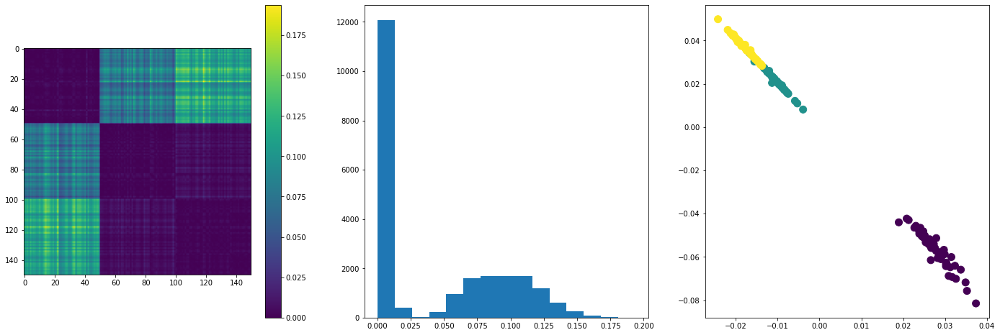
It is important to note, however, that this is not a proper distance metric as it does not have the triangle inequality property. To repair the triangle inequality property while maintaining the same ordering, it is necessary to convert to angular distance.
When the vector elements may be positive or negative:
Or, if the vector elements are always positive:
The advantage of the angular similarity coefficient is that, when used as a difference coefficient (by subtracting it from 1) the resulting function is a proper distance metric, which is not the case for the first meaning. However, for most uses this is not an important property. For any use where only the relative ordering of similarity or distance within a set of vectors is important, then which function is used is immaterial as the resulting order will be unaffected by the choice.
def angular_d(x, y):
return np.arccos(cosine_s(x, y)) / np.pi
D = proximity_matrix(X, measure=angular_d)
plot_prox(D, mds=True)
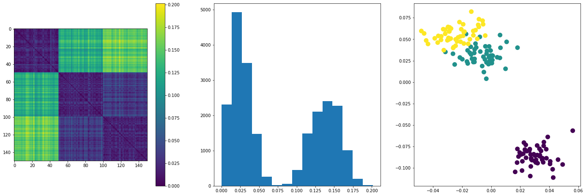
When working with text documents, often a damping function is applied to word frequencies, such as sqrt or log, to dampen the effect of high frequency counts. Also, to take into account that some words are more common than others, frequencies are weighted by the inverse document frequency, \(\log(n/n_{i})\), where \(n\) is the number of documents in the collection, and \(n_{i}\) is the number of documents containing the ith word. For more information, refer to Section 3.3 of [2].
\(l_2\)-normalized Euclidean distance¶
Another effective proxy for Cosine Distance can be obtained by \(l_2\) normalisation of the vectors, followed by the application of normal Euclidean distance. Using this technique each term in each vector is first divided by the magnitude of the vector, yielding a vector of unit length, which lies on the unit circle. Then, it is clear, the Euclidean distance over the end-points of any two vectors is a proper metric which gives the same ordering as the Cosine distance for any comparison of vectors (imagine drawing lines between vector points on the unit circle), and furthermore avoids the potentially expensive trigonometric operations required to yield a proper metric. Once the normalization has occurred, the vector space can be used with the full range of techniques available to any Euclidean space, notably standard dimensionality reduction techniques. This normalized form distance is notably used within many Deep Learning algorithms.
def d2_normlzd(x, y):
x = x/np.linalg.norm(x)
y = y/np.linalg.norm(y)
return np.sqrt(np.sum((x - y)**2))
D = proximity_matrix(X, measure=d2_normlzd)
plot_prox(D, mds=True)
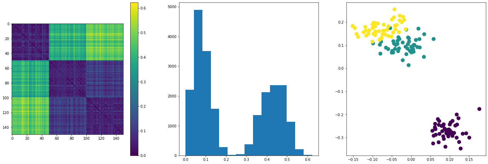
Soft cosine¶
Finally, cosine similarity assumes features are completely independent. If we believe there exist an intrinsic similarity among some features, e.g. some words as “game” and “play”, we may introduce such similarity through a series of weights relating feature \(i\) to feature \(j\), \(s_{ij}\), and calculate the “soft cosine similarity” as
Pearson’s correlation coefficient¶
The correlation coefficient is equivalent to a centered cosine similarity.
with \(-1 \leq \rho \leq 1\). A related dissimilarity measure being
with \(0 \leq d_{\rho} \leq 1\).
def pearson_s(x, y):
x = x - x.mean()
y = y - y.mean()
return cosine_s(x,y)
def pearson_d(x, y):
return 0.5*(1 - pearson_s(x,y))
D = proximity_matrix(X, measure=pearson_d)
plot_prox(D, mds=True)
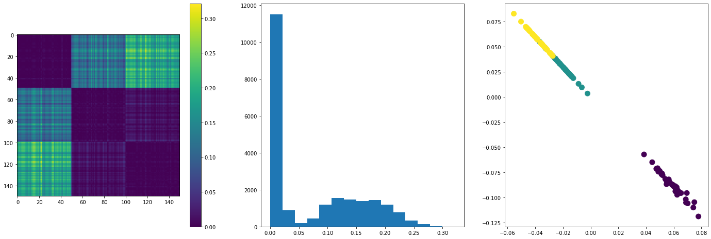
A nice property of correlation measures is that they account for biases of one vector with respect to another. For example, \(\rho((5,4,5,4),(4,3,4,3)) = 1\), so they are sensible to similar linear patters in the data.
Spearman correlation¶
Spearman correlation is similar to Pearson correlation, but only uses rank information (positions within a list of values), rather than the actual values. This makes Spearman correlation less sensitive to outliers in the data, and allows its use with ordinal data.
From [5]. The Spearman correlation between two variables is equal to the Pearson correlation between the rank values of those two variables; while Pearson’s correlation assesses linear relationships, Spearman’s correlation assesses monotonic relationships (whether linear or not). If there are no repeated data values, a perfect Spearman correlation of +1 or −1 occurs when each of the variables is a perfect monotone function of the other.
def spearman_s(x, y):
xr = np.argsort(x)
yr = np.argsort(y)
return pearson_s(xr,yr)
def spearman_d(x, y):
return 0.5*(1 - spearman_s(x,y))
D = proximity_matrix(X, measure=spearman_d)
plot_prox(D, mds=True)
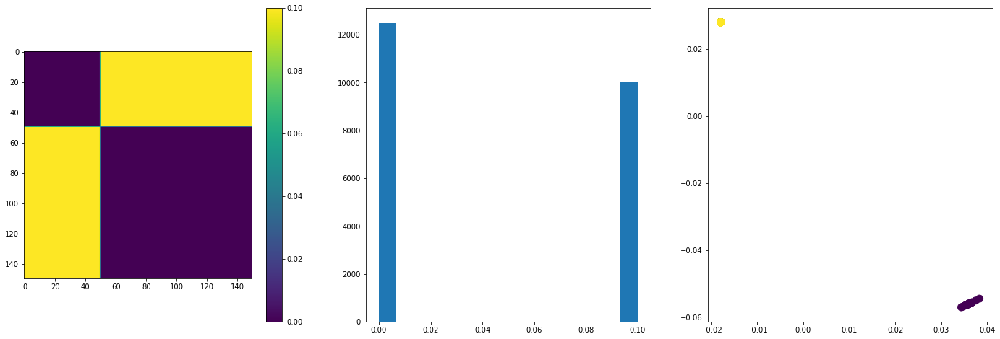
Tanimoto similarity¶
More typically used for categorical data, the Jaccard, or Tanimoto, coefficient can be also used with real valued vectors. It is defined as
The Tanimoto measure is inversely proportional to the squared Euclidean distance divided by the inner product. Since the inner product can thought as a measure of correlation, the more correlated the vectors are, the larger the value of \(s_T\).
def tanimoto_d(x, y):
return 1 - x @ y / (x @ x + y @ y - x @ y)
D = proximity_matrix(X, measure=tanimoto_d)
plot_prox(D, mds=True)
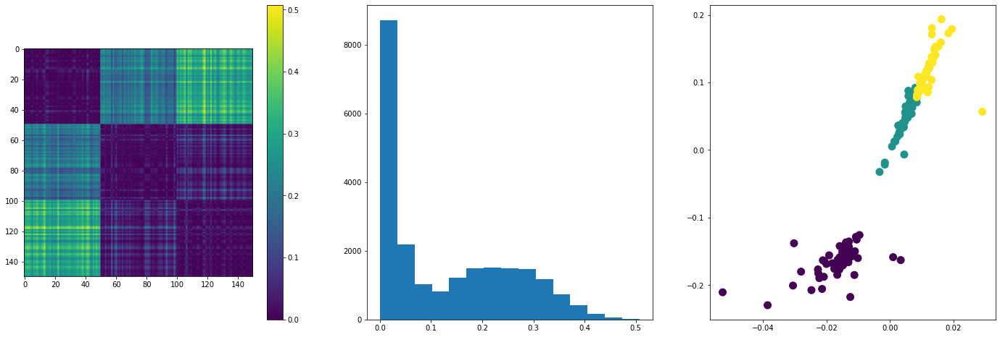
Based on weighted \(l_2\) norm¶
Another measure that is sometimes used is, which also shares some properties with the Canberra distance, is the Euclidean distance weighted by the sum of the length of both vectors
\(s_c\) takes its maximum value, 1, when \(\vec{x}=\vec{y}\) and its minimum, 0, when \(\vec{x} = -\vec{y}\).
def w_d2(x, y):
return np.linalg.norm(x-y)/(np.linalg.norm(x) +
np.linalg.norm(y))
D = proximity_matrix(X, measure=w_d2)
plot_prox(D, mds=True)
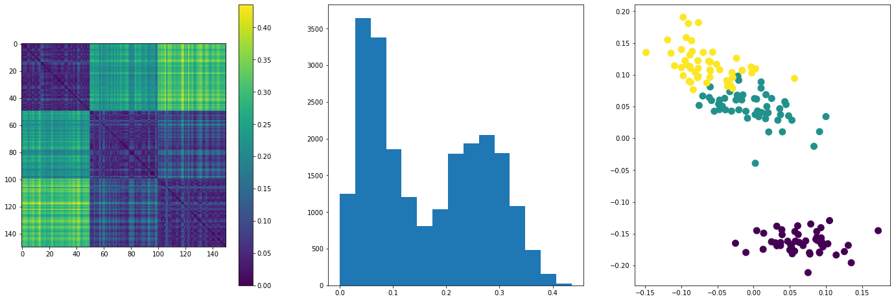
Categorical data, test data¶
Before introducing proximity measures for categorical data, we need an appropriate example data set with categorical variables. We will use the breast cancer data set from UCI Machine Learning repository.
From the official description:
This is one of three domains provided by the Oncology Institute that has repeatedly appeared in the machine learning literature. (See also lymphography and primary-tumor.) This data set includes 201 instances of one class and 85 instances of another class. The instances are described by 9 attributes, some of which are linear and some are nominal.
The attributes of the data set are, with their respective possible classes:
class: no-recurrence-events, recurrence-events
age: 10-19, 20-29, 30-39, 40-49, 50-59, 60-69, 70-79, 80-89, 90-99.
menopause: lt40, ge40, premeno.
tumor-size: 0-4, 5-9, 10-14, 15-19, 20-24, 25-29, 30-34, 35-39, 40-44, 45-49, 50-54, 55-59.
inv-nodes: 0-2, 3-5, 6-8, 9-11, 12-14, 15-17, 18-20, 21-23, 24-26, 27-29, 30-32, 33-35, 36-39.
node-caps: yes, no.
deg-malig: 1, 2, 3.
breast: left, right.
breast-quad: left-up, left-low, right-up, right-low, central.
irradiat: yes, no.
We now import the breast-cancer.csv file.
import pandas as pd
cancer = pd.read_csv('Data/breast-cancer.csv')
cancer = cancer[cancer.columns].astype('category')
cancer.head()
class |
age |
menopause |
tumor-size |
inv-nodes |
node-caps |
deg-malig |
breast |
breast-quad |
irradiat |
|
|---|---|---|---|---|---|---|---|---|---|---|
0 |
no-recurrence-events |
30-39 |
premeno |
30-34 |
0-2 |
no |
3 |
left |
left~low~ |
no |
1 |
no-recurrence-events |
40-49 |
premeno |
20-24 |
0-2 |
no |
2 |
right |
right~up~ |
no |
2 |
no-recurrence-events |
40-49 |
premeno |
20-24 |
0-2 |
no |
2 |
left |
left~low~ |
no |
3 |
no-recurrence-events |
60-69 |
ge40 |
15-19 |
0-2 |
no |
2 |
right |
left~up~ |
no |
4 |
no-recurrence-events |
40-49 |
premeno |
0-4 |
0-2 |
no |
2 |
right |
right~low~ |
no |
We can explore the relationship between pairs of variables using a scatter-plot. Due to large number of features, here we show only a single pair. To interactively explore different combination pairs, please run the code locally.
cols = cancer.columns
i = 4
j = 5
x1 = cancer[cols[i]].cat.codes
y1 = cancer[cols[i]].cat.codes
# Add jitter
x1 += np.random.normal(loc=0, scale=0.1, size=len(x1))
y1 += np.random.normal(loc=0, scale=0.1, size=len(y1))
fig = plt.figure(figsize=(8,8))
plt.xlabel(cols[i])
plt.ylabel(cols[j])
plt.scatter(x1, y1, c=cancer['class'].cat.codes, alpha=0.5);
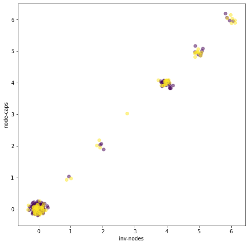
We will define some of our metrics to work with one-hot encoded data. So we ask pandas to do that for us.
cancer_oh = pd.get_dummies(cancer)
cancer_oh.head()
class~no~-recurrence-events |
class~recurrence~-events |
age~20~-29 |
age~30~-39 |
age~40~-49 |
age~50~-59 |
age~60~-69 |
age~70~-79 |
menopause~ge40~ |
menopause~lt40~ |
menopause~premeno~ |
tumor-size~0~-4 |
tumor-size~10~-14 |
tumor-size~15~-19 |
tumor-size~20~-24 |
tumor-size~25~-29 |
tumor-size~30~-34 |
tumor-size~35~-39 |
tumor-size~40~-44 |
tumor-size~45~-49 |
tumor-size~5~-9 |
tumor-size~50~-54 |
inv-nodes~0~-2 |
inv-nodes~12~-14 |
inv-nodes~15~-17 |
inv-nodes~24~-26 |
inv-nodes~3~-5 |
inv-nodes~6~-8 |
inv-nodes~9~-11 |
node-caps_? |
node-caps~no~ |
node-caps~yes~ |
deg-malig~1~ |
deg-malig~2~ |
deg-malig~3~ |
breast~left~ |
breast~right~ |
breast-quad_? |
breast-quad~central~ |
breast-quad~leftlow~ |
breast-quad~leftup~ |
breast-quad~rightlow~ |
breast-quad~rightup~ |
irradiat~no~ |
irradiat~yes~ |
|
|---|---|---|---|---|---|---|---|---|---|---|---|---|---|---|---|---|---|---|---|---|---|---|---|---|---|---|---|---|---|---|---|---|---|---|---|---|---|---|---|---|---|---|---|---|---|
0 |
1 |
0 |
0 |
1 |
0 |
0 |
0 |
0 |
0 |
0 |
1 |
0 |
0 |
0 |
0 |
0 |
1 |
0 |
0 |
0 |
0 |
0 |
1 |
0 |
0 |
0 |
0 |
0 |
0 |
0 |
1 |
0 |
0 |
0 |
1 |
1 |
0 |
0 |
0 |
1 |
0 |
0 |
0 |
1 |
0 |
1 |
1 |
0 |
0 |
0 |
1 |
0 |
0 |
0 |
0 |
0 |
1 |
0 |
0 |
0 |
1 |
0 |
0 |
0 |
0 |
0 |
0 |
0 |
1 |
0 |
0 |
0 |
0 |
0 |
0 |
0 |
1 |
0 |
0 |
1 |
0 |
0 |
1 |
0 |
0 |
0 |
0 |
0 |
1 |
1 |
0 |
2 |
1 |
0 |
0 |
0 |
1 |
0 |
0 |
0 |
0 |
0 |
1 |
0 |
0 |
0 |
1 |
0 |
0 |
0 |
0 |
0 |
0 |
0 |
1 |
0 |
0 |
0 |
0 |
0 |
0 |
0 |
1 |
0 |
0 |
1 |
0 |
1 |
0 |
0 |
0 |
1 |
0 |
0 |
0 |
1 |
0 |
3 |
1 |
0 |
0 |
0 |
0 |
0 |
1 |
0 |
1 |
0 |
0 |
0 |
0 |
1 |
0 |
0 |
0 |
0 |
0 |
0 |
0 |
0 |
1 |
0 |
0 |
0 |
0 |
0 |
0 |
0 |
1 |
0 |
0 |
1 |
0 |
0 |
1 |
0 |
0 |
0 |
1 |
0 |
0 |
1 |
0 |
4 |
1 |
0 |
0 |
0 |
1 |
0 |
0 |
0 |
0 |
0 |
1 |
1 |
0 |
0 |
0 |
0 |
0 |
0 |
0 |
0 |
0 |
0 |
1 |
0 |
0 |
0 |
0 |
0 |
0 |
0 |
1 |
0 |
0 |
1 |
0 |
0 |
1 |
0 |
0 |
0 |
0 |
1 |
0 |
1 |
0 |
We now have 45 binary features, but beware, the ones referring to same original feature are not independent.
Xc = cancer_oh.drop(columns=['class_no-recurrence-events',
'class_recurrence-events']).values
yc = cancer_oh['class_recurrence-events'].values
It is important to take care when using the proximity measures, since depending on the representation (original vs one-hot) the way of calculating each measure may change. We will point out such differences when appropriate.
Similarity measures for categorical data¶
Simple matching coefficient (SMC)¶
The Simple Matching Coefficient just counts how many entries match for both vectors. It is defined as
When dealing with categorical vectors in the original representation, the above equation must be applied directly.
When dealing with one-hot encoded vectors, counting the matches is equivalent to counting the number of matching ones, ignoring the zeroes, which in turn is equivalent to the dot product of both vectors, over the number of original dimensions
This last definition is equivalent to the Jaccard index for binary vectors.
We need to distinguish between one-hot encoded binary vectors, and natural binary vectors, for which the original representation consists of only two classes encoded as 1 and 0. If the attributes are symmetrical, (1s and 0s are equivalently important, i.e., carry equivalent information), the SMC must count matches of both ones and zeroes, and the above equation does not apply, and we must fall back to the first definition. As an example, consider gender encoded as male:0 and female:1. It is clear that both 1s and 0s are equally important.
For asymmetric natural binary vectors, for which the 0s do not carry the same amount of information as 1s, the Jaccard index (see below) is a more appropriate metric. For example (from [6]), in market basket analysis, the basket of two consumers who we wish to compare might only contain a small fraction of all the available products in the store, so the SMC will usually return very high values of similarities even when the baskets bear very little resemblance, thus making the Jaccard index a more appropriate measure of similarity in that context. For example, consider a supermarket with 1000 products and two customers. The basket of the first customer contains salt and pepper and the basket of the second contains salt and sugar. In this scenario, the similarity between the two baskets as measured by the Jaccard index would be 1/3, but the similarity becomes 0.998 using the SMC.
def smc(x,y, **kwargs):
one_hot = kwargs['one_hot']
if not one_hot:
matches = (x == y).sum()
return matches/len(x)
else:
return x @ y / (x.sum() + y.sum() - x @ y)
def d_smc(x, y, **kwargs):
return 1 - smc(x, y, **kwargs)
D = proximity_matrix(Xc, measure=d_smc, one_hot=True)
plot_prox(D, mds=True, labels=yc)
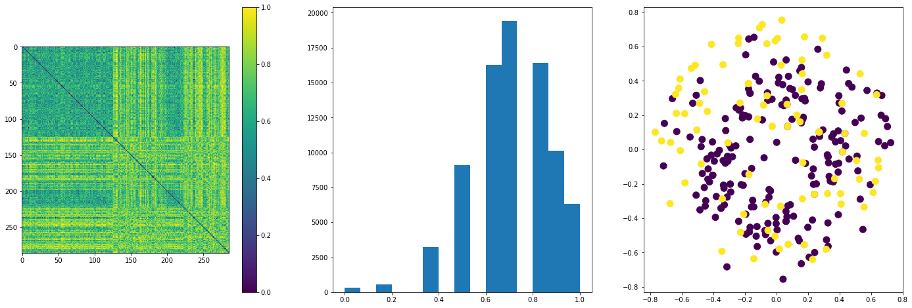
In a similar manner to how the Mahalanobis distance takes into account properties of the whole data set, we can weight the SMC for categorical data so that matches on unusual values contribute more to the similarity than matches on usual non-informative values. One way to this is to weight the similarity of a single feature by the inverse occurrence frequency of the feature in the whole data set:
where \(f_i\) is the relative frequency of class \(x_i\) in feature \(i\).
Jaccard or Tanimoto coefficient (JC)¶
The Jaccardor Tanimoto coefficient was designed as a similarly coefficient among sets, the original definition being
Note that \(0 \leq s_J\ leq 1\), and if both sets are empty, we define \(s_J=1\).
The index is also used with binary categorical feature vectors, for which it takes the form
When working with natural binary vectors, the Jaccard index is more appropriate than the SMC for asymmetric features, for example, in market basket analysis, where ones indicate the presence of an item in a set, and zeros signal the absence of an item in a set. When working with symmetric features the SMC is more appropriate, as discussed in the preceding section. The Jaccard index is also the most popular similarity measure for comparing chemical structures represented by means of fingerprints [7].
In the case of one-hot encoded binary vectors, the Jaccard index is equivalent to the SMC in the original representation, and was implement above.
For integer categorical vectors, where each coordinates contains, for example, the degree or strength of a feature (0 meaning total absence), the Jaccard index takes the form
where \(n_x\) and \(n_y\) are the number of non-zero entries of \(\vec{x}\) and \(\vec{y}\), \(n_{matches}\) are the number of non-zero matches, and \(n_{x,y > 0}\) is the number entries in x and y that are simultaneously larger than zero.
def s_j(x,y, binary=True):
if binary:
return x @ y / (x.sum() + y.sum() - x @ y)
else:
# Binarize vectors
xb = (x > 0)
yb = (y > 0)
nx = xb.sum()
ny = yb.sum()
nxy = xb @ yb
n_matches = (x == y)*nxy
return n_matches / (nx + ny - nxy)
Sørensen–Dice coefficient¶
The SD coefficient is defined, among two sets \(A\) and \(B\), as:
For binary data it takes the form
The SD is not a metric, but it is equivalent to the Jaccard index, since one is a monotone function of the other, \(J = S/(2-S)\).
A generalization of both Jaccard and SD is the Tversky index [8].
Ochiai coefficient¶
In biology, a categorical equivalent to the cosine similarity is the Ochiai coefficient which can be represented as [4]:
Here, \(A\) and \(B\) are sets, and \(|A|\) is the number of elements in \(A\), not the norm of \(A\).
If sets are represented as bit vectors, the Otsuka-Ochiai coefficient can be seen to be the same as the cosine similarity.
D = proximity_matrix(Xc, measure=cosine_d)
plot_prox(D, mds=True, labels=yc)
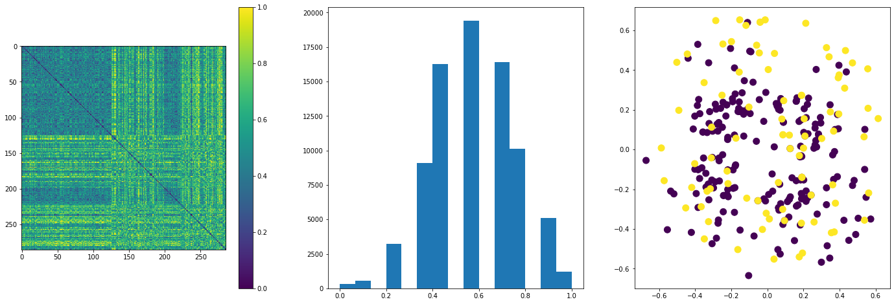
Dissimilarity measures for categorical data¶
Hamming distance¶
Defined as the number of places where two vectors differ. If vectors are in their original representation, the implementation follows the definition
If vectors are natural binary vectors, then the hamming distance is equivalent to the Manhattan distance and the squared Euclidean distance, also equal to the sum of a XOR element wise operation
When dealing with one-hot encoded vectors the number of mismatches can be found from the number of matches minus the original dimension, or as the element wise XOR sum over 2
def d_hamming(x, y, **kwargs):
one_hot = kwargs['one_hot']
if not one_hot:
return (x != y).sum()
else:
return (x != y).sum()/2
D = proximity_matrix(Xc, measure=d_hamming, one_hot=True)
plot_prox(D, mds=True, labels=yc)
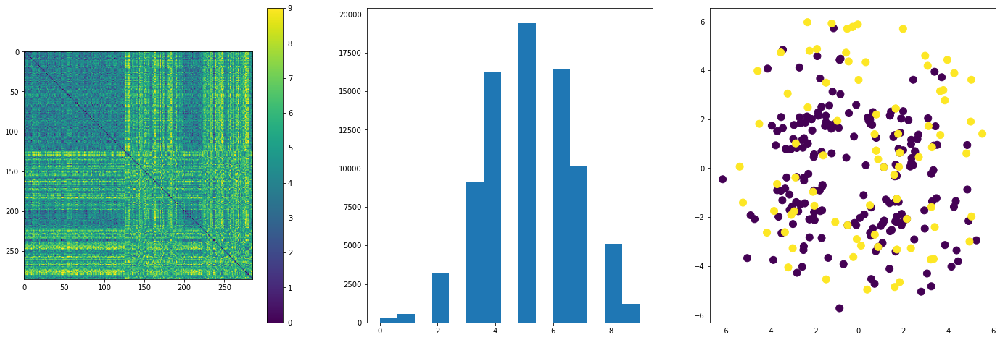
Dynamic measures¶
Edit Distance¶
The Hamming distance is a particular case of the edit distance between two vectors. The edit distance is typically used for strings, but can also be implemented for categorical vectors. Is defined as the number of operations required to transform one vector or string into another. In the most general case, the edit distance can be calculated for vectors of different length, if either the operation of addition or deletion is defined.
Different types of edit distance allow different sets of string operations [9]. For instance:
The Levenshtein distance allows deletion, insertion and substitution.
The Longest common subsequence (LCS) distance allows only insertion and deletion, not substitution.
The Hamming distance allows only substitution, hence, it only applies to strings of the same length.
The Damerau–Levenshtein distance allows insertion, deletion, substitution, and the transposition of two adjacent characters.
The Jaro distance allows only transposition.
In Levenshtein’s original definition, each of these operations has unit cost, so the Levenshtein distance is equal to the minimum number of operations required to transform a to b. A more general definition associates non-negative weight functions with the operations.
For example, the Levenshtein distance between “kitten” and “sitting” is 3. A minimal edit script that transforms the former into the latter is:
kitten → sitten (substitute “s” for “k”)
sitten → sittin (substitute “i” for “e”)
sittin → sitting (insert “g” at the end)
Edit distance finds applications in computational biology and natural language processing.
A common algorithm that implements the Levenshtein Distance is the Wagner–Fischer algorithm [10].
leveshtein_d('sitting', 'kitten')
3.0
Dynamic Time Warping (DTW)¶
More typically used for time-series data, DTW allows for portions of sequence vectors to stretch or contract to allow for a better matching among pairs of vectors. In speech recognition, this property enables matching of patterns at different speaking speed.
This stretching is accomplished by allowing many-to-one mapping of vector coordinates. This mapping is equivalent to repeating values in the wrapped sections, and then do a one-to-one mapping as usual, for which any proximity measure can be used, e.g., the \(l_p\) norm.
An optimal wrapping can be found using a dynamic programming approach. For the Manhattan distance, a possible recursive implementation is as follows
where \(\vec{x}_{D=i}\) is the i-dimensional vector up to the ith coordinate. The idea of DTW it that the indices of the rhs need not be reduced by one, effectively repeating one or more values,
We can fill the \(|x|\times |y|\) matrix recursively, to find all possible distances, then extract the term corresponding to the full vectors.
An implementation using the Manhattan distance is:
2.0
A usual constraint used with DTW is that of locality. This constraint imposes a minimum level \(w\) of positional alignment between matched elements. The DTW will be computed only if \(|i-j|<\leq w\). See [2] section 3.4.1.3.
Longest Common Subsequence (LCSS)¶
We define the LCSS of two sequence vectors as the longest subsequence shared by both vectors. A subsequence is a sub set of possibly discontinuous coordinates in the same order as in the original vector. The LCSS is a similarity function.
For example [11], consider the sequences (ABCD) and (ACBAD). They have 5 length-2 common subsequences: (AB), (AC), (AD), (BD), and (CD); 2 length-3 common subsequences: (ABD) and (ACD); and no longer common subsequences. So (ABD) and (ACD) are their longest common subsequences.
Similarly as in the previous section, a the LCSS of two string can be build recursively from the LCSS of their prefixes. With the operator ^ signifying string concatenation,
To find the LCS of \(X_{i}\) and \(Y_j\), compare \(x_{i}\) and \(y_{j}\). If they are equal, then the sequence \({\mathit {LCS}}(X_{i-1},Y_{j-1})\) is extended by that element, \(x_{i}\). If they are not equal, then the longer of the two sequences, \({\mathit {LCS}}(X_{i},Y_{j-1})\), and \({\mathit {LCS}}(X_{i-1},Y_{j})\), is retained. (If they are the same length, but not identical, then both are retained.) Not that even if either \(x_{i}\) or \(y_{i}\) have matched before, and they match again, it does not hurt to move the match to the new trailing elements. This is akin to either skip the previous match, or skip the current match. A worked out example can be found on [11].
2.0 |
((A C) (G A) (G C)) |
Mixed features¶
If our vectors have both real and categorical attributed, we two different options at our disposal, either transform the vectors to vectors of a single type, or define a measure that treats each set of features differently and then sum the pair of measures with appropriate weights.
The simplest approach it to label encode categorical attributes as integers, and apply a proximity measure for real valued vectors. It is a good idea to standardize or normalize each feature, as to allow a fair comparison between features of different scales.
An alternative to above approach is to discretize all real valued features to obtain a categorical vector, then use some measure for categorical feature vectors.
A more elaborate approach is to partition both vectors into a categorical and real subset of features and deal with each of them independently. Let \(\vec{x} = (\vec{x}_R, \vec{x}_{C})^T\) and \(\vec{y} = (\vec{y}_R, \vec{y}_{C})^T\), the similarity (distance) between \(\vec{x}\) and \(\vec{y}\) is given by
where \(s_R\) and \(s_{C}\) are real and categorical similarity measures, respectively, and \(\lambda\) regulates the relative importance of the categorical and numerical attributes. Missing domain knowledge, a good initial choice is to set lambda to the fraction of real features of the data set.
Optionally, instead of standardizing each feature prior to finding the proximity values, we can instead standardize each similarity measure (categorical, real) by its standard deviation, i.e., this is the deviation of the similarities (distances), not the deviations of each feature
An option that uses the one minus the range-normalized Manhattan distance and the Jaccard coefficient as similarity measures is the Gower similarity [12].
where
and
TODO: Implement general function for mixed variables.
TODO: Implement Gower similarity (verify definition in original paper, the weights seems different from the generic weights \(\lambda\)).
Fuzzy measures¶
Here we consider the case of probability vectors, or vectors with coordinates in the \([0,1]\) range that encode the degree or belief of some characteristic or property. This is a generalization of binary logic, which works with binary vectors, called fuzzy logic, where we deal with uncertain measurements.
In binary logic, two variables x and y are equivalent if the following expression evaluates to 1 (true)
The AND and the OR operator can be implemented with the min and max functions, respectively. The not operator may be implemented as 1-x. This implementations can be extended to fuzzy variables, thus the fuzzy similarity between variables may be defined as
For vectors, we can define
def s_fzzy(x, y, q):
c1 = np.minimum(1-x, 1-y)
c2 = np.minimum(x, y)
return np.sum(np.maximum(c1, c2)**q)**(1/q)
Lets consider the scalar case,
p_list = np.linspace(0, 1, 100)
x_g, y_g = np.meshgrid(p_list, p_list)
s_list = [s_fzzy(xi, yi, 1)
for xi,yi in zip(x_g.ravel(), y_g.ravel())]
s_arr = np.reshape(s_list, (100,100))
fig = plt.figure()
c = plt.pcolormesh(x_g, y_g, s_arr, shading='auto')
fig.colorbar(c);
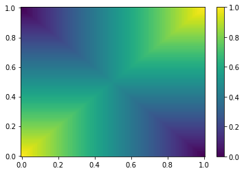
The similarity of a scalar (vector) with itself is not always 1. It takes into account the associated uncertainty of the true identity of the variable, i.e., the probability that two variables are actually equivalent.
Missing data¶
When dealing with missing we have the following options:
Discard all observations with missing values. Not feasible is a large proportions of observations have missing values.
Impute missing values.
Calculate the proximity using only available pair of coordinates, and scale its value to take into account the reduction in magnitude due to missing dimensions. Let \(b\) be the number of unavailable pairs,
\[ p(\vec{x},\vec{y}) = \frac{D}{D - b} p(\vec{x}_{i \notin b},\vec{y}_{i \notin b}) \]A good measure is the Manhattan distance, since it ensures that the range of the reduced measure is the same as that of the complete measure.
Find the average scalar proximity for all features among the whole data set. Calculate vector proximities as the sum of scalar proximities, if a scalar value is not available for a vector pair, use the average proximity for the dimension.
\[ p(\vec{x},\vec{y}) = \sum_{i=1}^{D} \psi(x_i, y_i) \]where \(\psi(x_i, y_i)\) is the scalar proximity if both \(x_i\) and \(y_i\) are available, and the average proximity of the ith feature if not.
Proximity between a point and a set¶
In many clustering algorithms, to evaluate whether a point should belong to a cluster, we need to find its distance to such cluster. If the cluster \(C\) is represented by a set of points, then we are asked to find the distance between a point \(\vec{x}\) and a set (cluster) \(\{\vec{y} \in C\}\).
When we consider the complete set \(C\), we can define the point-set distance from pairwise distances \(d(\vec{x},\vec{y})\) (or similarities) between \(\vec{x}\) and all elements of \(C\). For example:
Max-proximity:
\[ d(\vec{x}, C) = \underset{y \in C}{\operatorname{max}} d(\vec{x},\vec{y}) \]Min-proximity:
\[ d(\vec{x}, C) = \underset{y \in C}{\operatorname{min}} d(\vec{x},\vec{y}) \]Average-proximity:
\[ d(\vec{x}, C) = \frac{1}{|C|}\sum_{y \in C} d(\vec{x},\vec{y}) \]
Another, perhaps more efficient option, is to represent each cluster by a prototype point or geometry, and to evaluate the distance to such prototype.
Point representatives¶
For compact clusters, a point may be chosen as a representative. This points can be chosen or calculated in several ways, for example:
Mean vector, appropriate for real valued features
\[ \vec{\mu} = \frac{1}{|C|}\sum_{y\in C}\vec{y} \]Mean center. If categorical features are used, and we want the center to be a valid vector of categories, we may choose a point \(\vec{m}_c\) of the cluster as the prototype, by finding the point that satisfies
\[ \sum_{y \in C} d(\vec{m_c},\vec{y}) \leq \sum_{y \in C} d(\vec{z},\vec{y}),\quad \forall \vec{z} \in C \]Median center, appropriate if the distance is not a metric. The median center \(\vec{m}_{med}\) is the point of the cluster that satisfies
\[ \text{med}(d(\vec{m_{med}},\vec{y})|\vec{y}\in C) \leq \text{med}(d(\vec{z},\vec{y})|\vec{y}\in C), \quad \forall \vec{z} \in C \]
Hyper-plane representatives¶
If the cluster is linear in shape, as in several computer vision applications, we can replace it by a fitting hyperplane, with equation
The distance from a point \(\vec{x}\) to a hyperplane \(H\) is
which, in the case of Euclidean distance, becomes
Hyper-sphere representatives¶
If the cluster are not compact, but resemble a blob, instead of a point representative, we may choose to use a hyper-sphere \(Q\) with center at \(\vec{c}\) and of radius \(r\), with general equation
with the distance given by
where the Euclidean distance is commonly used.
Proximity among sets¶
Sometimes we need to quantify the dis(similarity) between sets of observations (for example, in hierarchical clustering). We can extend the definitions of proximity between observations to proximity between sets by considering pairwise measures between the set elements. Then, the proximity is a function \(U\times U \rightarrow \mathbb{R}\) where \(U\) is the set of all subsets \(D_i \subset X\). Note that often the proximity between sets is not a metric, not even a measure, even if the pair-wise proximity function is a metric.
For example, for two sets \(X\) and \(Y\):
Max-proximity. If p is a DM, not a measure. If p is a SM, a measure, but not a metric.
\[ p(X, Y) = \underset{x \in X, y \in Y}{\operatorname{max}} p(\vec{x},\vec{y}) \]Min-proximity: If p is a SM, not a measure. If p is a DM, a measure, but not a metric.
\[ p(X, Y) = \underset{x \in X, y \in Y}{\operatorname{min}} p(\vec{x},\vec{y}) \]Average-proximity: Never a measure.
\[ p(X, Y) =\frac{1}{|X||Y|} \sum_{x \in X}\sum_{y \in Y} p(\vec{x},\vec{y}) \]Mean proximity: A measure if p is a measure. Proximity between point representatives.
\[ p(X, Y) = p(\vec{m}_x,\vec{m}_y) \]Ward proximity:
\[ p(X,Y) = \sqrt{\frac{|X||Y|}{|X|+|Y|}}p(\vec{m}_x,\vec{m}_y) \]
Proximity of distributions¶
KL-divergence¶
From [13].
The Kullback-Leiber divergence is a measure of similarity between distributions. For two distributions \(P\) and \(Q\), the KL divergence from \(Q\) to \(P\) is defined as
In other words, it is the expectation of the logarithmic difference between the probabilities \(P\) and \(Q\), where the expectation is taken using the probabilities \(P\). For continuous distributions, it takes the form
where \(p\) and \(q\) denote the probability densities of \(P\) and \(Q\).
Often, the distribution \(P\) is the data, and the distribution \(Q\) is the model. Then, the Kullback–Leibler divergence is then interpreted as the average difference of the number of bits required for encoding samples of \(P\) using a code optimized for \(Q\) rather than one optimized for \(P\). In the context of machine learning, \(D_{\text{KL}}(P\parallel Q)\) is often called the information gain achieved if \(P\) would be used instead of \(Q\) which is currently used. In other words, it is the amount of information lost when \(Q\) is used to approximate \(P\). In order to find a distribution \(Q\) that is closest to \(P\), we can minimize KL divergence and compute an information projection (see t-SNE later on).
The KL divergence is not symmetric (\(D_{\text{KL}}(P\parallel Q) \neq D_{\text{KL}}(Q\parallel P)\)), nor satisfies the triangle inequality, and is, thus, not a metric.
The following properties hold, among others [13]:
\(D_{\text{KL}}(P\parallel Q)\geq 0\) (follows from the Gibb’s inequality) (Prove this.)
\(D_{\text{KL}}(P\parallel P) = 0\)
Mutual information is just the KL divergence of the joint distribution to the product of the marginal distributions, and thus, measures independence in some sense.
Jensen-Shannon distance¶
From [14].
One can derive a proper metric from the KL divergence, this being the square root of the Jensen-Shannon distance, defined as
where
The Jensen–Shannon divergence is a method of measuring the similarity between two probability distributions. If using base logarithm, it is bounded by \(0\leq {{\rm {JSD}}}(P\parallel Q)\leq 1\). For log base e, or ln, the upper bound is ln(2).
The Jensen–Shannon divergence has been applied in bioinformatics and genome comparison, in protein surface comparison, in the social sciences, in the quantitative study of history, fire experiments and in machine learning (GANs). See [14] for references.
Proximity measures on graps¶
Similarity between nodes in a graph¶
Consider a graph \(G=(N,E)\), where \(N\) is a set of nodes, and \(E\) is a set of edges. Two nodes in \(G\) are considered close is they are “connected”. There are several ways to measure this “connectedness”.
Structural distance¶
For unweighted graphs, the geodesic distance between two nodes is the number of edges of the shortest path connecting them. For weighted graphs, the sum of the weights of the edges belonging to the shortest path are added to find the distance.
The shortest path between a source node \(s\) and a node \(j\) can be found using the Dijkstra’s algorithm [15]. The essence of this algorithm is the following:
Initialize all distance \(SP(i,j) = \infty\).
Start at node \(s\) and set \(SP(s,s) = 0\), do not consider \(s\) examined so far.
For all un-examined nodes:
Choose the one with minimum \(SP(s,i)\).
For each neighbor \(j\) of node \(i\):
\[ SP(s,j) = min(SP(s,j), SP(s,i) + w_{ij}) \]Until all nodes are examined.
Set node \(i\) as examined.
Note that step 3.2 does not sets neighbors as examined, \(SP(s,i)\) can be updated more than once, until examined directly, keeping the minimum path so far at each step.
Random Walk-based similarity (PageRank)¶
Since shortest path algorithms only considers single path between nodes, as a proximity function, it ignores the fact that nodes connected by many paths should be considered closer in some applications.
One way to take into account the multiplicity of paths is to use a restarting random walk. Start at the source node \(s\), and move through the graph choosing an edge with probability proportional to decreasing function of its weight. Consider also the probability to restart the random walk at \(s\). Nodes more connected to \(s\) will be visited more often. A possible implementation of this idea is the PageRank algorithm [16].
Similarity between graphs¶
This is hard problem (It is NP-hard to match complete graphs.) The following ideas have been proposed:
Maximum common subgraph distance. If two graphs share a large subgraph, they are considered more similar.
Substructure-based similarity: Count frequent substructures between two graphs.
Graph-edit distance: Number of edits required to transform a graph into another.
Graph kernels: Kernel functions defined to measure similarity between graphs, such as the shortest path kernel and the random-walk kernel.
For more information, see [2], Chapter 17.
References¶
- 1
Sergios Theodoridis and Konstantinos Koutroumbas. Pattern Recognition. Elsevier, 2009. URL: https://doi.org/10.1016/b978-1-59749-272-0.x0001-2, doi:10.1016/b978-1-59749-272-0.x0001-2.
- 2(1,2,3,4)
Charu C Aggarwal. Data mining: the textbook. Springer, 2015.
- 3
Jan Schulz. Canberra distance. 2007. [Online; accessed 12-April-2021]. URL: http://www.code10.info/index.php?option=com_content&view=article&id=49:article_canberra-distance&catid=38:cat_coding_algorithms_data-similarity&Itemid=57.
- 4(1,2)
Wikipedia contributors. Cosine similarity — Wikipedia, the free encyclopedia. 2021. [Online; accessed 13-April-2021]. URL: https://en.wikipedia.org/w/index.php?title=Cosine_similarity&oldid=1017252556.
- 5
Wikipedia contributors. Spearman's rank correlation coefficient — Wikipedia, the free encyclopedia. 2021. [Online; accessed 15-April-2021]. URL: https://en.wikipedia.org/w/index.php?title=Spearman%27s_rank_correlation_coefficient&oldid=1013762125.
- 6
Wikipedia contributors. Simple matching coefficient — Wikipedia, the free encyclopedia. 2021. [Online; accessed 16-April-2021]. URL: https://en.wikipedia.org/w/index.php?title=Simple_matching_coefficient&oldid=1007400537.
- 7
Wikipedia contributors. Chemical similarity — Wikipedia, the free encyclopedia. 2021. [Online; accessed 18-April-2021]. URL: https://en.wikipedia.org/w/index.php?title=Chemical_similarity&oldid=1016793498.
- 8
Wikipedia contributors. Tversky index — Wikipedia, the free encyclopedia. 2021. [Online; accessed 21-April-2021]. URL: https://en.wikipedia.org/w/index.php?title=Tversky_index&oldid=1007400550.
- 9
Wikipedia contributors. Edit distance — Wikipedia, the free encyclopedia. 2021. [Online; accessed 18-April-2021]. URL: https://en.wikipedia.org/w/index.php?title=Edit_distance&oldid=1013329630.
- 10
Wikipedia contributors. Wagner-fischer algorithm — Wikipedia, the free encyclopedia. 2021. [Online; accessed 18-April-2021]. URL: https://en.wikipedia.org/wiki/Wagner-Fischer_algorithm.
- 11(1,2)
Wikipedia contributors. Longest common subsequence problem — Wikipedia, the free encyclopedia. 2021. [Online; accessed 20-April-2021]. URL: https://en.wikipedia.org/w/index.php?title=Longest_common_subsequence_problem&oldid=1018929068.
- 12
John C Gower. A general coefficient of similarity and some of its properties. Biometrics, pages 857–871, 1971.
- 13(1,2)
Wikipedia contributors. Kullback-leibler divergence — Wikipedia, the free encyclopedia. 2021. [Online; accessed 21-April-2021]. URL: https://en.wikipedia.org/w/index.php?title=Kullback%E2%80%93Leibler_divergence&oldid=1013473911.
- 14(1,2)
Wikipedia contributors. Jensen-shannon divergence — Wikipedia, the free encyclopedia. 2021. [Online; accessed 21-April-2021]. URL: https://en.wikipedia.org/w/index.php?title=Jensen%E2%80%93Shannon_divergence&oldid=1018225207.
- 15
Wikipedia contributors. Dijkstra's algorithm — Wikipedia, the free encyclopedia. 2021. [Online; accessed 21-April-2021]. URL: https://en.wikipedia.org/w/index.php?title=Dijkstra%27s_algorithm&oldid=1014900072.
- 16
Wikipedia contributors. Pagerank — Wikipedia, the free encyclopedia. 2021. [Online; accessed 21-April-2021]. URL: https://en.wikipedia.org/w/index.php?title=PageRank&oldid=1018352503.
TODO: Explore effect of centering and scaling on the metrics.
TODO: Look for example applications of key metrics.